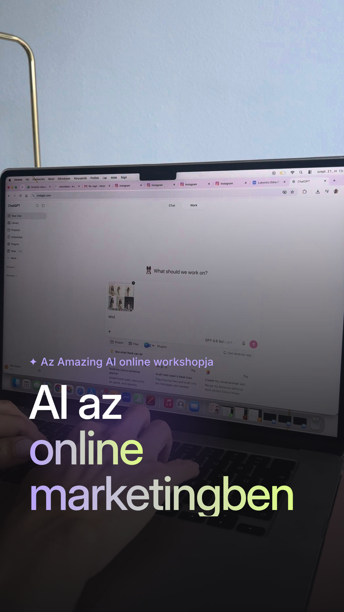
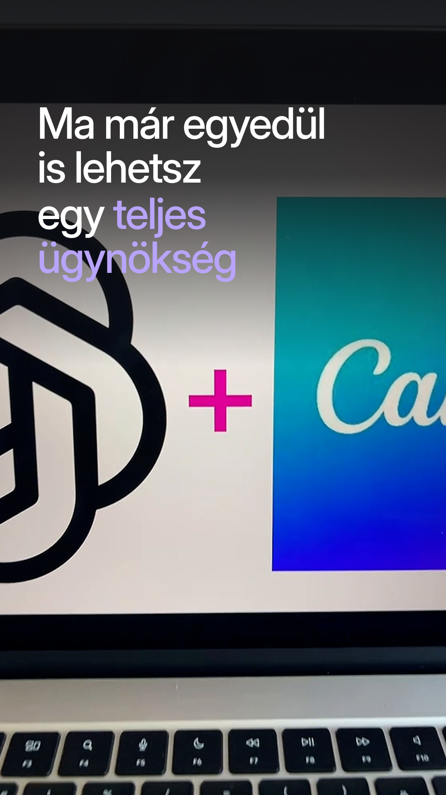
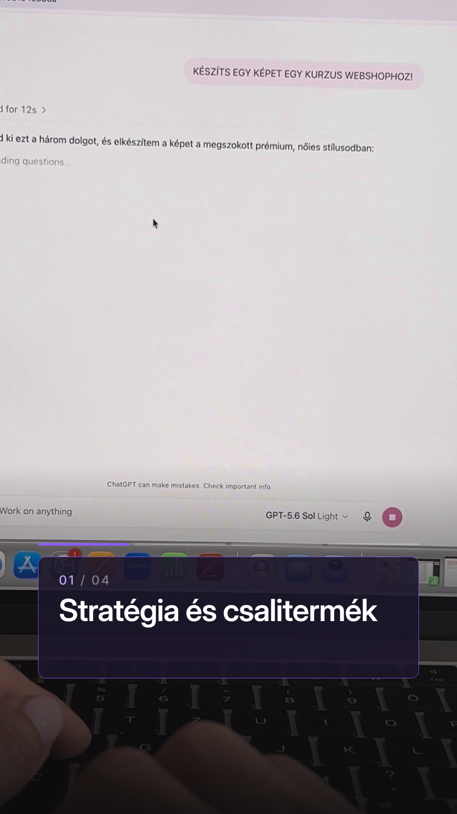
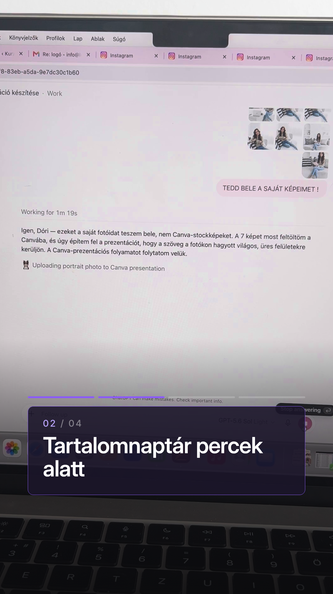
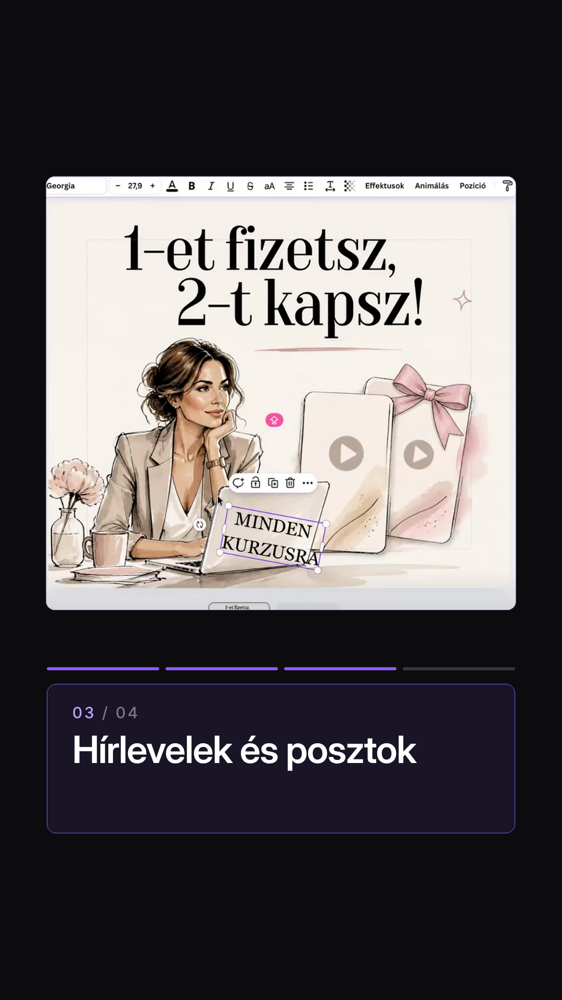
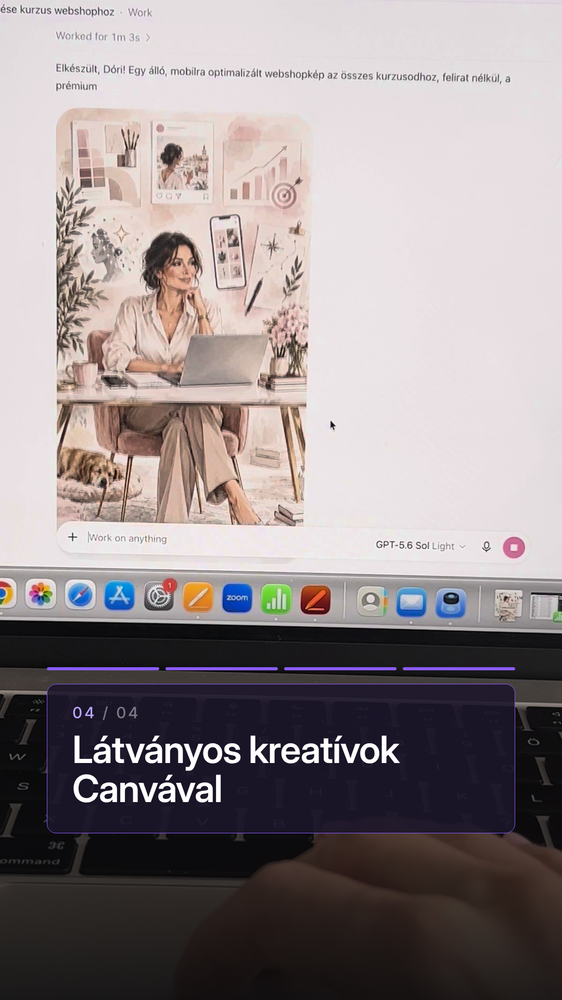
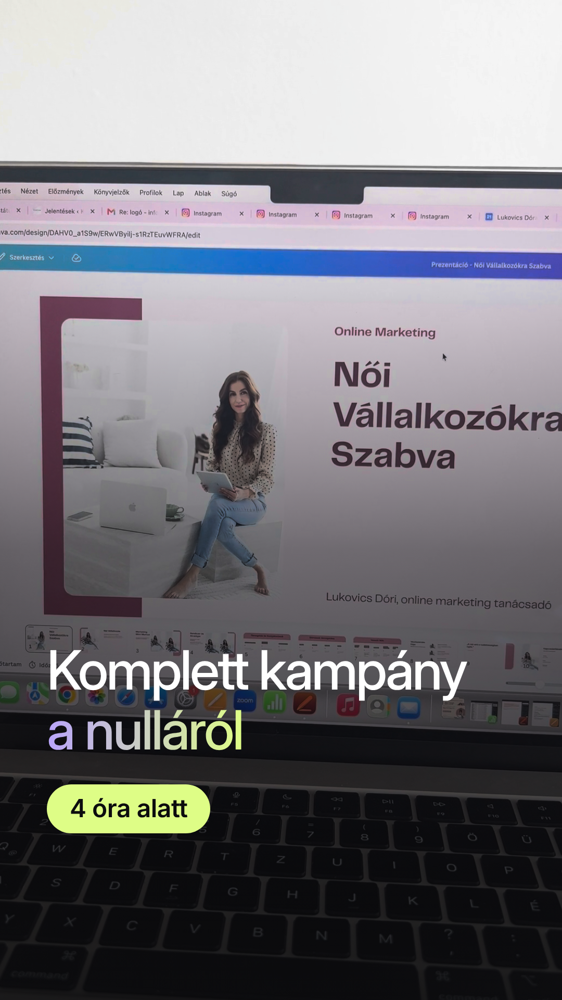
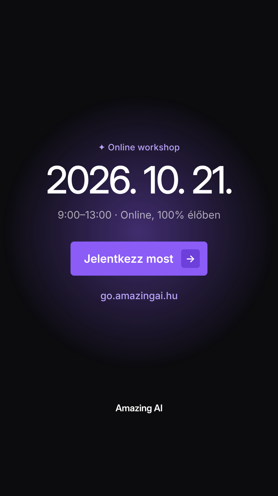

Zene: Sweet Life (luxury chill), 123 BPM, ütemre vágva.

Gépelő kezek a laptopon; ütemre jön a cím: „AI az / online / marketingben” (lila→lime).

ChatGPT + Canva logós ráközelítés; „Ma már egyedül is lehetsz egy teljes ügynökség”.

ChatGPT prompt; lépéskártya 01/04.

ChatGPT válasz; lépéskártya 02/04.

A Canva-poszt lebegő kártyán; lépéskártya 03/04.

AI-generált kép a képernyőn; lépéskártya 04/04.

Canva-prezentáció; „Komplett kampány a nulláról” + lime „4 óra alatt” a csúcsponton.

Dátum, időpont, „Jelentkezz most” gomb, go.amazingai.hu; a zene lecseng.